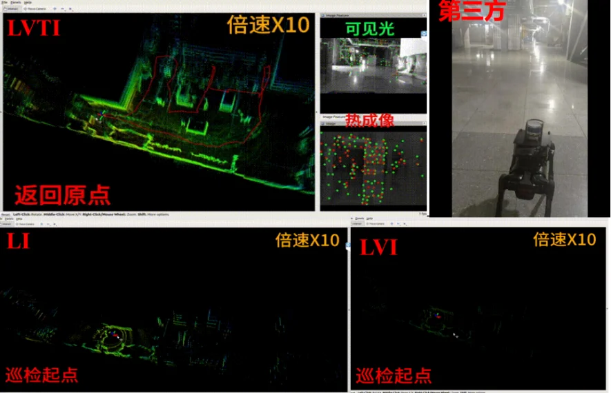
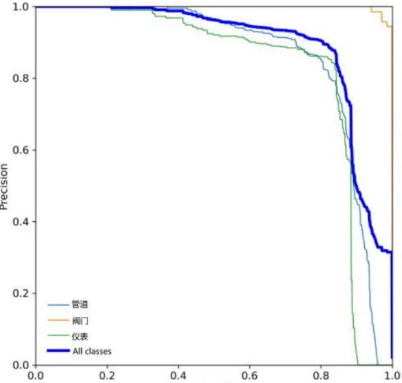
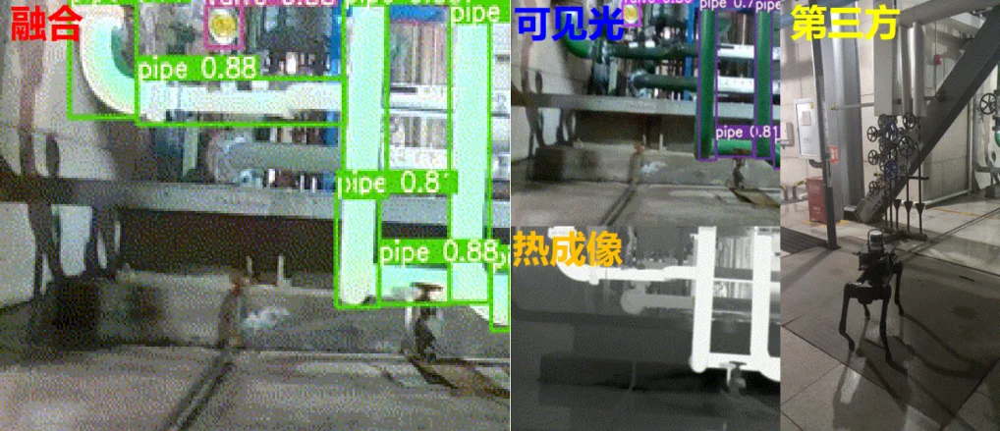

四足机器人电厂巡检跨模态感知实验平台
一、平台构建
实验平台以 Unitree AlienGo 四足机器人作为移动载体，其具备卓越的运动控制能力，能够适应起伏路面等复杂的非结构化地形。在感知系统方面，本项目自主设计并构建了紧凑一体化集成的“跨光谱综合感知模块”。该模块包含：用于捕捉全天候热辐射信息的 Optris Pi640 非制冷红外热像仪；用于采集纹理及语义信息的 Intel RealSense D435i 深度相机可见光模块；用于提供高频运动先验的 Xsens MTi-100 高精度工业级 IMU；以及搭载于平台顶部获取精准环境深度的 Velodyne VLP-16 激光雷达。所有数据均交由机载的 Intel NUC 迷你主机进行集中实时处理。
由于热成像与可见光成像机理截然不同，导致传统标定失效，本项目制作了一块带有圆形镂空孔洞并在背面贴附电加热垫的定制化标定板。通电后形成清晰的“亮-暗”对比图案，从而采用级联策略成功完成了跨光谱多传感器的联合外参标定。

二、数据集构建
现有的主流数据集缺乏针对低可视度、高危工业环境的专用数据。本项目选定总面积达 2 万平方米的天津市陈塘热电厂作为数据采集现场，涵盖了狭窄管道房间与空旷室外厂区等多种场景。该工业场景不仅布满密集金属管道导致特征提取困难，且存在极端动态的光照条件和丰富的热源辐射特性。
最终采集的数据集完整覆盖了机器人巡检的典型作业周期，重点记录了多种极具挑战性的工况，包括：可见光难以提取有效特征点的弱光区、机身抖动引起的运动模糊、探照灯直射导致的大面积过曝、以及温度接近导致热图像对比度降低和走廊环境引发的激光雷达几何退化挑战。此外，项目组对关键帧进行了细致的语义标注，标记了阀门、表计、管道等关键设备，使其可直接服务于工业语义分割与目标检测任务。
三、实验结果
为全面评估系统的鲁棒性，项目组在热电厂开展了巡检路线的实地对比实验。在定性分析中，当进入昏暗且有反光干扰的设备间时，可见光特征锐减，本项目的跨光谱融合系统自动提升了捕捉到稳定“热特征”的热成像模态权重，成功维持了定位连续性。在机身剧烈抖动时，高频 IMU 的预积分约束与对比度高的热成像数据共同保证了前端追踪的稳定性。在空荡走廊中，视觉纹理信息和 IMU 有效约束了激光雷达的轴向漂移。

在定位精度的定量评估中，长达数百米的巡检结束后，仅基于激光惯导（LI）或激光-可见光-惯导（LVI）的方案原点漂移量分别高达 5.3 m 和 8.7 m，而本项目提出的跨光谱融合方案（LVTI）将原点漂移量控制在了 0.2 m 以内，实现了完美闭环。
| 定位方案 | 长距离巡检原点漂移量 |
|---|---|
| 激光-惯导（LI） | 5.3 m |
| 激光-可见光-惯导（LVI） | 8.7 m |
| 本项目·跨光谱融合（LVTI） | < 0.2 m |


在识别结果评估中，跨模态融合算法显著提升了目标检测精度。实验表明，融合后针对“管道”、“仪表”和“阀门”的整体平均准确率均值（mAP50）从融合前的 0.854 提升至 0.908。上述高精度的定位与识别能力证明了本系统能够保障设备与机器人在长达数小时自主巡检中的双重安全。
← 返回主页